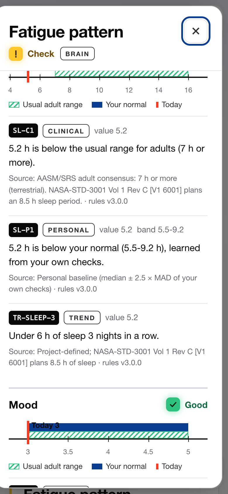

EARTH ⇢ MARS · 11.0 MIN
NASA Space Apps 2026 · Astronaut health
ASCLEPIUS
Medicine for when Earth
is too far away.
Offline health check for astronauts that knows whether Earth can answer in time.
✓
Earth guides
→
Act, Earth confirms
!
Crew decides

Real NASA data
Tula Manish · Warangal, India · Images: NASA/JPL/USGS, NASA